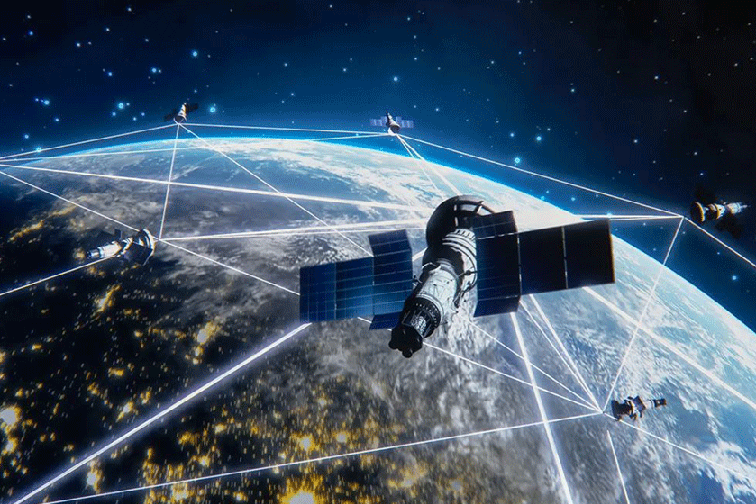
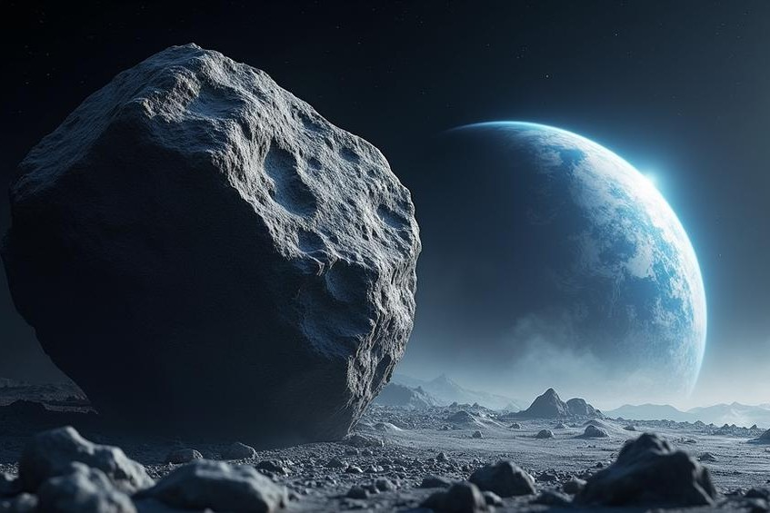
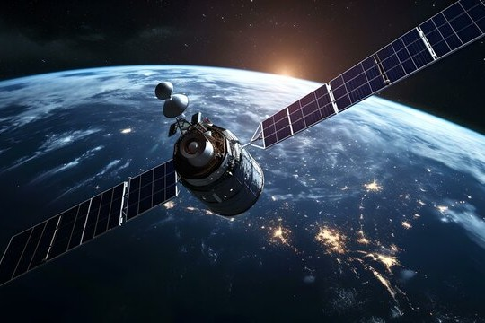

Reporting from de NASA page, a satelite is an object that orbits surrounding another object in space. There are two different types of satellites, namely natural and artificial satellite. As quoted by Science Learn, according to Dr. Allan, a satellite is anything that orbits around larger objects.

Satélites
Satélites são objetos que orbitam planetas ou luas. Eles podem ser naturais, como a Lua que orbita a Terra, ou artificiais, que são feitos pelo homem e lançados ao espaço para diversas finalidades. Os satélites artificiais são usados para comunicação, meteorologia, navegação, pesquisa científica e muito mais. Eles podem estar em diferentes tipos de órbitas, como órbita baixa da Terra (LEO), órbita geossíncrona (GEO) e órbita média (MEO). Cada tipo de órbita tem suas próprias características e usos específicos.

Satélite Natural
Satélites naturais são corpos celestes que orbitam planetas ou outros astros. A Lua, que orbita a Terra, é um exemplo. Diferentemente dos artificiais, eles não são construídos, mas formados por processos naturais no cosmos. Sua influência é crucial para a dinâmica planetária, afetando marés, estabilidade do eixo de rotação e até condições climáticas. Além disso, estudá-los fornece informações sobre a formação e evolução dos sistemas planetários.

Satélites Artificiais
Satélites artificiais são dispositivos construídos pelo homem e lançados ao espaço para orbitar a Terra ou outros corpos celestes. Eles desempenham funções essenciais, como comunicação global, monitoramento climático, observação astronômica, espionagem e navegação por GPS. Podem ser colocados em diferentes órbitas, como baixa (LEO), média (MEO) ou geossíncrona (GEO), dependendo de suas finalidades,evoluindo constantemente, tornando-os indispensáveis para a vida moderna.
Evolução dos Satélites
A ideia de objetos orbitando a Terra começou a ganhar destaque com as descobertas astronômicas de Johannes Kepler e Isaac Newton nos séculos XVII e XVIII, que explicaram a dinâmica das órbitas. No entanto, o conceito de satélites artificiais foi imaginado apenas no século XX, com autores como Konstantin Tsiolkovsky e Arthur C. Clarke vislumbrando dispositivos em órbitas para comunicação global. O primeiro satélite artificial, o Sputnik 1, foi lançado pela União Soviética em 1957, marcando o início da era espacial. Desde então, os satélites passaram por grandes avanços tecnológicos, tornando-se menores, mais eficientes e especializados para diferentes funções.
Para que Servem os Satélites?
Os satélites têm aplicações amplas e diversificadas, que incluem:
Navegação: Operar sistemas como o GPS, essenciais para transporte, mapeamento e localização.
Meteorologia: Monitorar o clima, prever condições meteorológicas e rastrear eventos extremos, como furacões.
Ciência e Exploração: Observar o universo, coletar dados de outros planetas e estudar fenômenos terrestres.
Monitoramento Ambiental: Analisar mudanças climáticas, desmatamento, poluição e recursos naturais.
Segurança e Defesa: Observar movimentações estratégicas, espionagem e comunicação militar.
Objetivo dos Satélites
Os satélites têm objetivos variados que atendem a diversas necessidades humanas e científicas. Eles são usados para comunicações, possibilitando transmissões de TV, telefonia e internet em escala global. Além disso, desempenham papéis cruciais no monitoramento ambiental, observando mudanças climáticas, desmatamento e desastres naturais. Satélites também são essenciais para a navegação, fornecendo dados para sistemas GPS e guiando aviões, navios e veículos terrestres. No campo da ciência, permitem estudos astronômicos, análise do espaço e observação da Terra com precisão. Por fim, são usados na defesa e segurança, viabilizando vigilância, rastreamento e comunicações militares estratégicas.
Quando Começaram a Ser Estudados?
O estudo de satélites começou com teorias que explicavam o movimento dos corpos celestes. No século XVII, Johannes Kepler formulou as leis que regem as órbitas planetárias, enquanto Isaac Newton, no século XVIII, descreveu a gravidade e como ela influencia os objetos no espaço. Esses avanços abriram caminho para a ideia de objetos artificiais orbitando a Terra. No século XX, Konstantin Tsiolkovsky desenvolveu teorias sobre foguetes e propôs o uso de satélites para comunicações. Mais tarde, cientistas como Arthur C. Clarke imaginaram satélites geossíncronos, que tornaram-se viáveis com o avanço da tecnologia espacial na década de 1950.
Quando Começaram a Ser Produzidos Satélites Artificiais?
A produção de satélites artificiais começou no contexto da Guerra Fria. Em 1957, a União Soviética lançou o Sputnik 1, o primeiro satélite artificial da história, como parte de uma competição tecnológica com os Estados Unidos. Pouco depois, em 1958, os EUA lançaram seu primeiro satélite, o Explorer 1. Esses lançamentos marcaram o início da exploração espacial e do uso de satélites artificiais para finalidades científicas, militares e comerciais. A partir daí, a produção de satélites se expandiu rapidamente, impulsionada por avanços tecnológicos e pela crescente demanda por conectividade e exploração.
Empresa
Nossa empresa é especializada em astrologia e em proporcionar uma experiência única de autoconhecimento através dos astros. Com uma abordagem moderna e acessível, oferecemos conteúdo de qualidade sobre horóscopos, previsões astrológicas, mapas natais e temas relacionados ao universo astrológico.
Nosso time é composto por especialistas apaixonados por astrologia, comprometidos em oferecer informações precisas e insights valiosos para nossos leitores. Buscamos facilitar o entendimento das influências planetárias e ajudar nossos seguidores a se conectarem com seu verdadeiro propósito.
Aqui, cada conteúdo é pensado para inspirar, educar e transformar, tornando a astrologia uma ferramenta prática para o crescimento pessoal e a harmonia com o cosmos.
Contactos
Contacte-nos via terminal telefónico:+244972798291 ou via E-mail:theerror395.gmail.com
Sobre Nós
Bem-vindo ao nosso espaço dedicado à astrologia! Aqui, exploramos os mistérios do cosmos, conectando você ao poder dos astros e ajudando a desvendar o impacto deles em sua vida. Nosso objetivo é trazer insights profundos, orientações práticas e reflexões transformadoras por meio de análises astrológicas, horóscopos, e conteúdos exclusivos.
Acreditamos que a astrologia é uma ferramenta poderosa para o autoconhecimento e o crescimento pessoal. Junte-se a nós nesta jornada cósmica para entender mais sobre você, seus relacionamentos e os ciclos universais que moldam a sua jornada.
Estamos aqui para guiar e inspirar sua conexão com o universo!